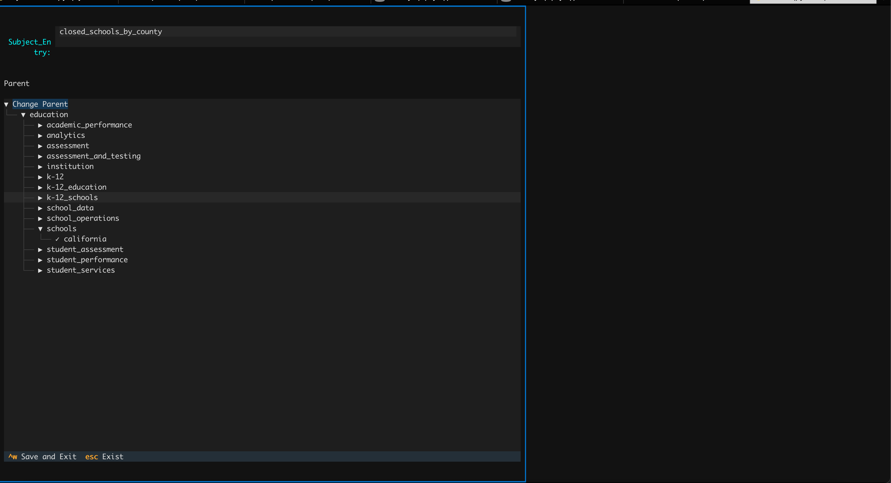

上下文命令 @¶
1. 概览¶
上下文命令 @ 允许你将丰富的上下文知识直接注入对话会话。无需让模型猜测数据结构，你可以明确指出需要使用的数据表、指标或 SQL 片段，从而显著提高生成 SQL 的准确度。
上下文条目被组织成三棵独立的树：
@catalog—— 物理数据结构（数据库、Schema、数据表）@subject—— 语义/业务层（域、层级、语义模型、指标）
通过组合这些结构，你向 Datus 提供与你一致的心智模型，让它以你的视角理解数据，而不是凭猜测推断。
2. 基础用法¶
输入 @ 并按 Tab 可以唤起上下文浏览器。根据不同命令，会显示可逐级展开的树状视图：
@catalog¶

当焦点位于包含 语义模型 的面板时，可通过 Ctrl+e 进行编辑。

@subject¶


编辑域层级与名称¶
当焦点位于左侧的 树 时，可通过 Ctrl+e 修改。

编辑指标详情¶
当焦点位于右侧包含 指标详情 的面板时，可通过 Ctrl+e 修改。

编辑历史 SQL¶
当焦点位于右侧显示 历史 SQL 详情 的面板时，可通过 Ctrl+e 修改。

关于上下文树的初始化，可参考知识库文档。
3. 高级能力¶
上下文注入模式¶
在聊天命令中有两种方式注入上下文：
浏览模式¶
输入 @（或 @catalog、@subject、@sql）并按 Tab，逐级浏览树状结构，直到找到需要的数据表、指标或 SQL。
模糊搜索模式¶
输入 @（或 @任意文本）后跟关键词，再按 Tab。Datus 会跨所有上下文树进行模糊搜索并推荐最佳匹配，无需记住精确路径。在 !执行命令 中最近搜索过的表、指标与 SQL 会优先显示。
示例¶
# 浏览模式 —— 按步骤选择
/ pay attention to @catalog <Tab>
# 依次选择 catalog > my_database > public > customers
# 模糊搜索模式 —— 关键字快速查找
/ @revenue <Tab>
# 展示所有与 revenue 相关的指标
上下文类型¶
物理数据（@catalog）¶
- 数据库与 Schema
- 表结构与字段定义
- 数据类型与约束
- 外键关系
业务上下文（@subject）¶
- 业务域与层级划分
- 语义模型与业务逻辑
- 计算指标与 KPI
- 业务术语表与定义
历史知识（@sql）¶
- 历史执行过的 SQL 查询
- 可复用的 SQL 片段与模板
- 查询模式与最佳实践
- 优化示例
更多关于如何构建这些上下文树的内容，请查阅 知识库文档。